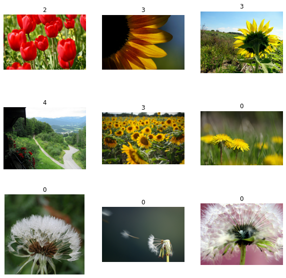
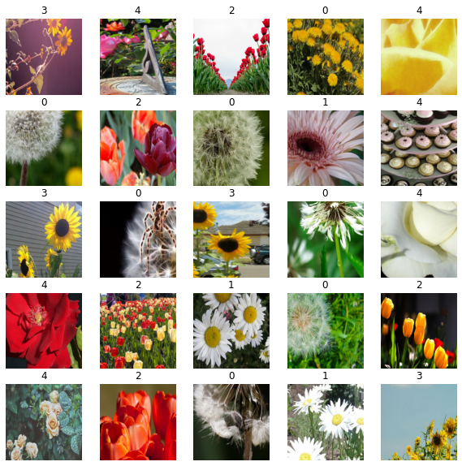
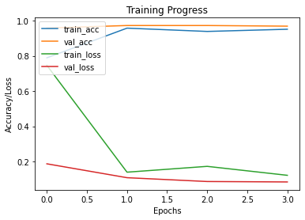

Image Classification using BigTransfer (BiT)
Author: Sayan Nath
Date created: 2021/09/24
Last modified: 2024/01/03
Description: BigTransfer (BiT) State-of-the-art transfer learning for image classification.

Introduction
BigTransfer (also known as BiT) is a state-of-the-art transfer learning method for image classification. Transfer of pre-trained representations improves sample efficiency and simplifies hyperparameter tuning when training deep neural networks for vision. BiT revisit the paradigm of pre-training on large supervised datasets and fine-tuning the model on a target task. The importance of appropriately choosing normalization layers and scaling the architecture capacity as the amount of pre-training data increases.
BigTransfer(BiT) is trained on public datasets, along with code in TF2, Jax and Pytorch. This will help anyone to reach state of the art performance on their task of interest, even with just a handful of labeled images per class.
You can find BiT models pre-trained on ImageNet and ImageNet-21k in TFHub as TensorFlow2 SavedModels that you can use easily as Keras Layers. There are a variety of sizes ranging from a standard ResNet50 to a ResNet152x4 (152 layers deep, 4x wider than a typical ResNet50) for users with larger computational and memory budgets but higher accuracy requirements.
 Figure: The x-axis shows the number of images used per class, ranging from 1 to the full
dataset. On the plots on the left, the curve in blue above is our BiT-L model, whereas
the curve below is a ResNet-50 pre-trained on ImageNet (ILSVRC-2012).
Figure: The x-axis shows the number of images used per class, ranging from 1 to the full
dataset. On the plots on the left, the curve in blue above is our BiT-L model, whereas
the curve below is a ResNet-50 pre-trained on ImageNet (ILSVRC-2012).
Setup
import os
os.environ["KERAS_BACKEND"] = "tensorflow"
import numpy as np
import pandas as pd
import matplotlib.pyplot as plt
import keras
from keras import ops
import tensorflow as tf
import tensorflow_hub as hub
import tensorflow_datasets as tfds
tfds.disable_progress_bar()
SEEDS = 42
keras.utils.set_random_seed(SEEDS)
Gather Flower Dataset
train_ds, validation_ds = tfds.load(
"tf_flowers",
split=["train[:85%]", "train[85%:]"],
as_supervised=True,
)
[1mDownloading and preparing dataset 218.21 MiB (download: 218.21 MiB, generated: 221.83 MiB, total: 440.05 MiB) to ~/tensorflow_datasets/tf_flowers/3.0.1...[0m
[1mDataset tf_flowers downloaded and prepared to ~/tensorflow_datasets/tf_flowers/3.0.1. Subsequent calls will reuse this data.[0m
Visualise the dataset
plt.figure(figsize=(10, 10))
for i, (image, label) in enumerate(train_ds.take(9)):
ax = plt.subplot(3, 3, i + 1)
plt.imshow(image)
plt.title(int(label))
plt.axis("off")

Define hyperparameters
RESIZE_TO = 384
CROP_TO = 224
BATCH_SIZE = 64
STEPS_PER_EPOCH = 10
AUTO = tf.data.AUTOTUNE # optimise the pipeline performance
NUM_CLASSES = 5 # number of classes
SCHEDULE_LENGTH = (
500 # we will train on lower resolution images and will still attain good results
)
SCHEDULE_BOUNDARIES = [
200,
300,
400,
] # more the dataset size the schedule length increase
The hyperparamteres like SCHEDULE_LENGTH and SCHEDULE_BOUNDARIES are determined based
on empirical results. The method has been explained in the original
paper and in their Google AI Blog
Post.
The SCHEDULE_LENGTH is aslo determined whether to use MixUp
Augmentation or not. You can also find an easy MixUp
Implementation in Keras Coding Examples.

Define preprocessing helper functions
SCHEDULE_LENGTH = SCHEDULE_LENGTH * 512 / BATCH_SIZE
random_flip = keras.layers.RandomFlip("horizontal")
random_crop = keras.layers.RandomCrop(CROP_TO, CROP_TO)
def preprocess_train(image, label):
image = random_flip(image)
image = ops.image.resize(image, (RESIZE_TO, RESIZE_TO))
image = random_crop(image)
image = image / 255.0
return (image, label)
def preprocess_test(image, label):
image = ops.image.resize(image, (RESIZE_TO, RESIZE_TO))
image = ops.cast(image, dtype="float32")
image = image / 255.0
return (image, label)
DATASET_NUM_TRAIN_EXAMPLES = train_ds.cardinality().numpy()
repeat_count = int(
SCHEDULE_LENGTH * BATCH_SIZE / DATASET_NUM_TRAIN_EXAMPLES * STEPS_PER_EPOCH
)
repeat_count += 50 + 1 # To ensure at least there are 50 epochs of training
Define the data pipeline
# Training pipeline
pipeline_train = (
train_ds.shuffle(10000)
.repeat(repeat_count) # Repeat dataset_size / num_steps
.map(preprocess_train, num_parallel_calls=AUTO)
.batch(BATCH_SIZE)
.prefetch(AUTO)
)
# Validation pipeline
pipeline_validation = (
validation_ds.map(preprocess_test, num_parallel_calls=AUTO)
.batch(BATCH_SIZE)
.prefetch(AUTO)
)
Visualise the training samples
image_batch, label_batch = next(iter(pipeline_train))
plt.figure(figsize=(10, 10))
for n in range(25):
ax = plt.subplot(5, 5, n + 1)
plt.imshow(image_batch[n])
plt.title(label_batch[n].numpy())
plt.axis("off")

Load pretrained TF-Hub model into a KerasLayer
bit_model_url = "https://tfhub.dev/google/bit/m-r50x1/1"
bit_module = hub.load(bit_model_url)
Create BigTransfer (BiT) model
To create the new model, we:
-
Cut off the BiT model’s original head. This leaves us with the “pre-logits” output. We do not have to do this if we use the ‘feature extractor’ models (i.e. all those in subdirectories titled
feature_vectors), since for those models the head has already been cut off. -
Add a new head with the number of outputs equal to the number of classes of our new task. Note that it is important that we initialise the head to all zeroes.
class MyBiTModel(keras.Model):
def __init__(self, num_classes, module, **kwargs):
super().__init__(**kwargs)
self.num_classes = num_classes
self.head = keras.layers.Dense(num_classes, kernel_initializer="zeros")
self.bit_model = module
def call(self, images):
bit_embedding = self.bit_model(images)
return self.head(bit_embedding)
model = MyBiTModel(num_classes=NUM_CLASSES, module=bit_module)
Define optimizer and loss
learning_rate = 0.003 * BATCH_SIZE / 512
# Decay learning rate by a factor of 10 at SCHEDULE_BOUNDARIES.
lr_schedule = keras.optimizers.schedules.PiecewiseConstantDecay(
boundaries=SCHEDULE_BOUNDARIES,
values=[
learning_rate,
learning_rate * 0.1,
learning_rate * 0.01,
learning_rate * 0.001,
],
)
optimizer = keras.optimizers.SGD(learning_rate=lr_schedule, momentum=0.9)
loss_fn = keras.losses.SparseCategoricalCrossentropy(from_logits=True)
Compile the model
model.compile(optimizer=optimizer, loss=loss_fn, metrics=["accuracy"])
Set up callbacks
train_callbacks = [
keras.callbacks.EarlyStopping(
monitor="val_accuracy", patience=2, restore_best_weights=True
)
]
Train the model
history = model.fit(
pipeline_train,
batch_size=BATCH_SIZE,
epochs=int(SCHEDULE_LENGTH / STEPS_PER_EPOCH),
steps_per_epoch=STEPS_PER_EPOCH,
validation_data=pipeline_validation,
callbacks=train_callbacks,
)
Epoch 1/400
10/10 [==============================] - 18s 852ms/step - loss: 0.7465 - accuracy: 0.7891 - val_loss: 0.1865 - val_accuracy: 0.9582
Epoch 2/400
10/10 [==============================] - 5s 529ms/step - loss: 0.1389 - accuracy: 0.9578 - val_loss: 0.1075 - val_accuracy: 0.9727
Epoch 3/400
10/10 [==============================] - 5s 520ms/step - loss: 0.1720 - accuracy: 0.9391 - val_loss: 0.0858 - val_accuracy: 0.9727
Epoch 4/400
10/10 [==============================] - 5s 525ms/step - loss: 0.1211 - accuracy: 0.9516 - val_loss: 0.0833 - val_accuracy: 0.9691
Plot the training and validation metrics
def plot_hist(hist):
plt.plot(hist.history["accuracy"])
plt.plot(hist.history["val_accuracy"])
plt.plot(hist.history["loss"])
plt.plot(hist.history["val_loss"])
plt.title("Training Progress")
plt.ylabel("Accuracy/Loss")
plt.xlabel("Epochs")
plt.legend(["train_acc", "val_acc", "train_loss", "val_loss"], loc="upper left")
plt.show()
plot_hist(history)

Evaluate the model
accuracy = model.evaluate(pipeline_validation)[1] * 100
print("Accuracy: {:.2f}%".format(accuracy))
9/9 [==============================] - 3s 364ms/step - loss: 0.1075 - accuracy: 0.9727
Accuracy: 97.27%
Conclusion
BiT performs well across a surprisingly wide range of data regimes – from 1 example per class to 1M total examples. BiT achieves 87.5% top-1 accuracy on ILSVRC-2012, 99.4% on CIFAR-10, and 76.3% on the 19 task Visual Task Adaptation Benchmark (VTAB). On small datasets, BiT attains 76.8% on ILSVRC-2012 with 10 examples per class, and 97.0% on CIFAR-10 with 10 examples per class.

You can experiment further with the BigTransfer Method by following the original paper.
Example available on HuggingFace
| Trained Model | Demo |
| :–: | :–: |
|  |
|  |
|